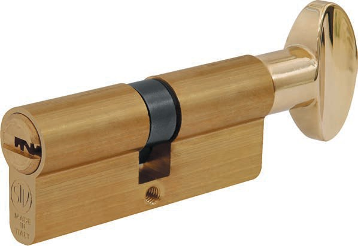

Латунный корпус и сердечник, 5 плоских компьютерных ключей с кодовым номером. Есть версии с поворотником и аварийным открыванием.
| Защита | 2 стальных штифта против высверливания |
| Кулачок | DIN, смещение 30° |
| Ключ | поворот 360° |
| Отделки | латунь, никель, хром, бронза |